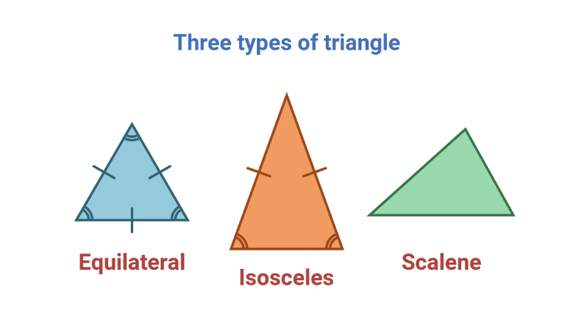

Let’s learn how to classify triangles based on their sides and angles!
A triangle is a shape with three sides and three angles. Triangles are classified based on the length of their sides or the size of their angles.
What are Triangles?
A triangle is a polygon with three sides and three angles. Triangles can be classified by either the length of their sides or the size of their angles.

Equilateral Triangle
An equilateral triangle has all three sides equal in length, and all three angles are equal to 60°.
Example: A triangle with sides of 5 cm, 5 cm, and 5 cm.
Isosceles Triangle
An isosceles triangle has two sides of equal length, and the third side is different. The angles opposite the equal sides are also equal.
Example: A triangle with sides of 6 cm, 6 cm, and 4 cm.
Scalene Triangle
A scalene triangle has all three sides of different lengths, and all three angles are different.
Example: A triangle with sides of 4 cm, 5 cm, and 6 cm.